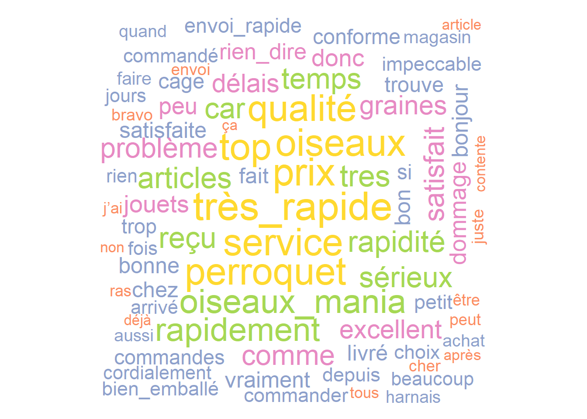
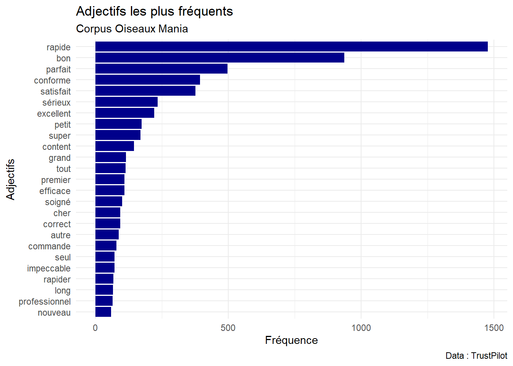
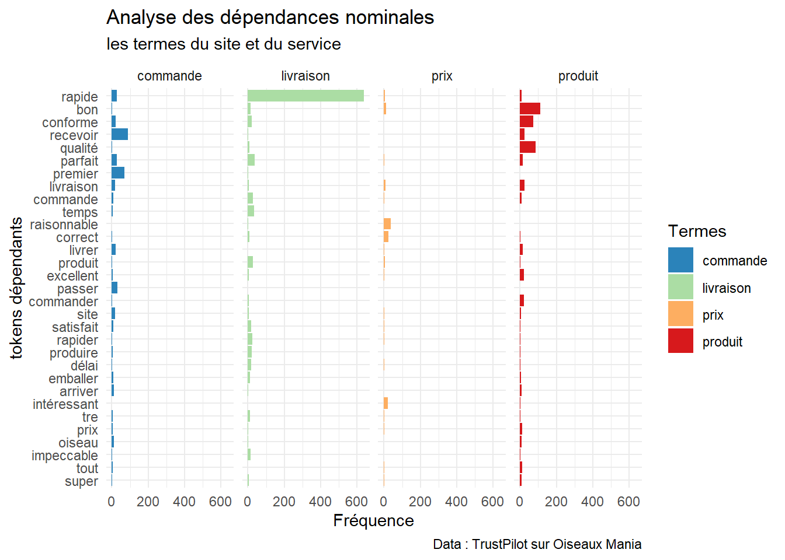

library(readxl)
library(tidyverse)
library(quanteda)
library(quanteda.textstats)
library(quanteda.textplots)
library(RColorBrewer)
display.brewer.all()4 Annotations et dépendances syntaxiques
4.1 Les données
data <- read_csv("data/data_trustpilot_oiseaux.csv")Rows: 4388 Columns: 7
── Column specification ────────────────────────────────────────────────────────
Delimiter: ","
chr (4): auteur, date, month, comments
dbl (3): id, year, note
ℹ Use `spec()` to retrieve the full column specification for this data.
ℹ Specify the column types or set `show_col_types = FALSE` to quiet this message.data$nb_caractere<-nchar(data$comments) #on compte le nombre de caractère de chaque commentaire
summary(data$nb_caractere) Min. 1st Qu. Median Mean 3rd Qu. Max.
12.0 41.0 74.0 104.3 130.0 1571.0 mean(data$nb_caractere)[1] 104.2974median(data$nb_caractere)[1] 74round(mean(data$nb_caractere),1)[1] 104.3moy<-round(mean(na.omit(data$nb_caractere)), 1)
ggplot(data)+
geom_boxplot(aes(nb_caractere))+
geom_text(aes(x=500, y=0.2,label=paste("Moyenne :",moy)))+
coord_flip()+
scale_y_continuous(NULL, breaks = NULL)+
theme_minimal()4.2 Les traitements préliminaires
On reprend ce qu’on a fait au cours dernier, sans éliminer les termes trop fréquents :
corpus_oiseaux<-corpus(data, text_field = "comments")
tok<-tokens(corpus_oiseaux, remove_punct = TRUE, remove_numbers = TRUE, remove_symbols = TRUE)%>%
tokens_remove(stopwords("fr"))
dfm<-dfm(tok)4.3 Co-occurrences
On va maintenant constituer des bi-grammes basés sur de nombreuses co-occurrences entre les termes :
# textstat_collocations(tok)
head(textstat_collocations(tok), 5) collocation count count_nested length lambda z
1 livraison rapide 612 0 2 3.587755 56.29325
2 oiseaux mania 194 0 2 7.111407 38.50542
3 très bon 291 0 2 3.325458 37.28183
4 très bien 332 0 2 2.763473 37.07693
5 bonne qualité 116 0 2 4.440036 33.65412tail(textstat_collocations(tok),10) collocation count count_nested length lambda z
4046 bien bien 3 0 2 -1.601302 -2.983435
4047 livraison produits 4 0 2 -1.539254 -3.248433
4048 site rapide 7 0 2 -1.205217 -3.274181
4049 commande commande 8 0 2 -1.154362 -3.338450
4050 bien rapide 10 0 2 -1.111673 -3.567851
4051 produits rapide 2 0 2 -2.293296 -3.616176
4052 livraison commande 9 0 2 -1.233460 -3.770310
4053 très a 2 0 2 -2.581564 -4.071675
4054 rapide rapide 4 0 2 -2.401230 -5.077424
4055 très très 22 0 2 -1.110720 -5.196198colloc<-textstat_collocations(tok, min_count = 10, tolower = TRUE)
head(colloc,10) collocation count count_nested length lambda z
1 livraison rapide 612 0 2 3.587755 56.29325
2 oiseaux mania 194 0 2 7.111407 38.50542
3 très bon 291 0 2 3.325458 37.28183
4 très bien 332 0 2 2.763473 37.07693
5 bonne qualité 116 0 2 4.440036 33.65412
6 rien dire 93 0 2 5.576935 32.54402
7 bon produit 146 0 2 3.412030 32.15574
8 envoi rapide 137 0 2 3.741715 27.61231
9 produit conforme 94 0 2 3.613662 27.52989
10 très satisfaite 154 0 2 3.288031 27.11619tail(colloc,10) collocation count count_nested length lambda z
356 livraison merci 10 0 2 -0.4024193 -1.285159
357 commande produits 11 0 2 -0.3922655 -1.311659
358 rapide site 13 0 2 -0.4424632 -1.601325
359 rapide livraison 23 0 2 -0.3478837 -1.653038
360 bien commande 11 0 2 -0.5705858 -1.910948
361 rapide a 10 0 2 -0.6915725 -2.214619
362 a rapide 10 0 2 -0.8863541 -2.840453
363 commande rapide 21 0 2 -0.6532274 -2.978690
364 bien rapide 10 0 2 -1.1116732 -3.567851
365 très très 22 0 2 -1.1107203 -5.196198tok_cooc<-tokens_compound(tok, pattern = colloc[colloc$z>6.97,],join = TRUE)
tok["text400"]Tokens consisting of 1 document and 7 docvars.
text400 :
[1] "Excellent" "service" "livraison" "rapide" tok_cooc["text400"]Tokens consisting of 1 document and 7 docvars.
text400 :
[1] "Excellent_service" "livraison_rapide" Analyse de fréquence et représentation graphique :
dfm_cooc<-dfm(tok_cooc)
dfm_cooc2<-dfm_trim(dfm_cooc, max_termfreq = 170)
head(textstat_frequency(dfm_cooc2),20) feature frequency rank docfreq group
1 prix 169 1 160 all
2 service 165 2 154 all
3 perroquet 165 2 150 all
4 oiseaux 165 2 145 all
5 top 163 5 149 all
6 qualité 160 6 153 all
7 oiseaux_mania 142 7 129 all
8 rapidement 139 8 137 all
9 tres 127 9 107 all
10 articles 124 10 115 all
11 rapidité 124 10 117 all
12 reçu 122 12 114 all
13 sérieux 121 13 114 all
14 car 120 14 111 all
15 temps 120 14 115 all
16 satisfait 115 16 108 all
17 problème 114 17 102 all
18 comme 114 17 108 all
19 très_satisfaite 111 19 107 all
20 graines 107 20 87 alltextplot_wordcloud(dfm_cooc2, max_words = 200, color = brewer.pal(6, "Set2"))tok_cooc<-tokens_replace(tok_cooc, c("très_rapidement","très_satisfait"), c("très_rapide","très_satisfaite"))
dfm_cooc<-dfm(tok_cooc)
textstat_frequency(dfm_cooc, n=25) feature frequency rank docfreq group
1 commande 715 1 620 all
2 a 502 2 412 all
3 livraison 474 3 432 all
4 site 401 4 359 all
5 livraison_rapide 389 5 381 all
6 merci 380 6 368 all
7 parfait 361 7 334 all
8 très 349 8 298 all
9 produit 331 9 294 all
10 rapide 328 10 310 all
11 produits 321 11 292 all
12 recommande 320 12 313 all
13 plus 292 13 254 all
14 bien 280 14 251 all
15 très_bien 256 15 236 all
16 super 252 16 232 all
17 tout 245 17 224 all
18 j'ai 234 18 189 all
19 colis 207 19 176 all
20 très_satisfaite 202 20 195 all
21 c'est 196 21 168 all
22 toujours 188 22 163 all
23 très_rapide 174 23 168 all
24 prix 169 24 160 all
25 service 165 25 154 alldfm_cooc2<-dfm_trim(dfm_cooc, max_termfreq = 175)
textplot_wordcloud(dfm_cooc2, max_words = 100, color = brewer.pal(6, "Set2"))
4.4 Annotations
Pour cette partie, on repart du jeu de données brut.
4.4.1 Détecter les langues
Dans le cas d’un corpus composé de plusieurs langues (par exemple, un corpus extrait de twitter), il peut être intéressant de filtrer le corpus à partir de la langue. On utilise un algorithme, qui peut être long à exécuter selon la taille du corpus, et qui est plutôt performant : cld3. Il repose sur un réseau de neurones développé par Google
library(cld3)
data$langue<-detect_language(data$comments)
# data$langue
data_fr<-data%>%filter(langue=="fr")4.4.2 POS
library(cleanNLP)
# cnlp_init_udpipe(model_name = "french")
#
# annotate<-cnlp_annotate(data$comments, verbose = 100)
# ann_token<-annotate$token
# write_csv2(ann_token, "annotation_oiseaux.csv")
# write_rds(ann_token,"annotation_oiseaux.rds")
ann_token<-read_rds("data/annotation_oiseaux.rds")
head(ann_token%>%filter(upos=="ADJ"|upos=="NOUN"|upos=="VERB"),15)# A tibble: 15 × 11
doc_id sid tid token token_with_ws lemma upos xpos feats tid_source
<int> <int> <chr> <chr> <chr> <chr> <chr> <chr> <chr> <chr>
1 1 1 4 super "super " super ADJ <NA> Gend… 5
2 1 1 5 service "service" servi… NOUN <NA> Gend… 0
3 1 2 2 changez "changez " chang… VERB <NA> Mood… 0
4 1 2 5 peut "peut " pouvo… VERB <NA> Mood… 2
5 1 2 8 cagnotte "cagnotte " cagnot ADJ <NA> Gend… 9
6 1 2 9 fidélité "fidélité " fidél… NOUN <NA> Gend… 5
7 1 2 11 est "est" être VERB <NA> Mood… 9
8 1 2 15 dirais "dirais " dir VERB <NA> Mood… 11
9 1 2 16 inutile "inutile " inuti… ADJ <NA> Gend… 15
10 2 1 2 délai "délai " délai NOUN <NA> Gend… 0
11 2 1 5 commande "commande " comma… NOUN <NA> Gend… 2
12 2 1 7 rapide "rapide " rapide ADJ <NA> Gend… 5
13 2 2 2 délais "délais " délais NOUN <NA> Gend… 14
14 2 2 6 commande "commande " comma… NOUN <NA> Gend… 2
15 2 2 8 rapide "rapide" rapide ADJ <NA> Gend… 6
# ℹ 1 more variable: relation <chr>ann_token%>%filter(upos=="ADJ"|upos=="NOUN"|upos=="VERB")# A tibble: 34,232 × 11
doc_id sid tid token token_with_ws lemma upos xpos feats tid_source
<int> <int> <chr> <chr> <chr> <chr> <chr> <chr> <chr> <chr>
1 1 1 4 super "super " super ADJ <NA> Gend… 5
2 1 1 5 service "service" servi… NOUN <NA> Gend… 0
3 1 2 2 changez "changez " chang… VERB <NA> Mood… 0
4 1 2 5 peut "peut " pouvo… VERB <NA> Mood… 2
5 1 2 8 cagnotte "cagnotte " cagnot ADJ <NA> Gend… 9
6 1 2 9 fidélité "fidélité " fidél… NOUN <NA> Gend… 5
7 1 2 11 est "est" être VERB <NA> Mood… 9
8 1 2 15 dirais "dirais " dir VERB <NA> Mood… 11
9 1 2 16 inutile "inutile " inuti… ADJ <NA> Gend… 15
10 2 1 2 délai "délai " délai NOUN <NA> Gend… 0
# ℹ 34,222 more rows
# ℹ 1 more variable: relation <chr>g<-ann_token%>%group_by(upos)%>%
summarise(n=n())%>%
filter(!is.na(upos))
ggplot(g)+
geom_col(aes(reorder(upos,n),n, fill=n), show.legend = FALSE)+
scale_fill_fermenter(palette = "PuRd", direction = 1)+
coord_flip()+
labs(title = "Fréquence des UPOS", subtitle = "Corpus Oiseaux Mania", caption = "Data TrustPilot", x=NULL, y=NULL)+
theme_dark()Maintenant, on va s’intéresser à des catégories grammaticales spécifiques :
vocab1<-ann_token%>%
filter(upos=="NOUN")%>%
summarise(freq=n(),.by=lemma)%>%
filter(freq>55)
ggplot(vocab1,aes(x=reorder(lemma,freq),y=freq))+
geom_bar(stat="identity",fill="lightgreen")+
coord_flip()+
theme_minimal()+
labs(title = "Noms communs les plus fréquents",subtitle = "Corpus Oiseaux Mania", caption="Data : TrustPilot",x="Noms commun",y="Fréquence")vocab1bis<-ann_token%>%
filter(upos=="ADJ")%>%
summarise(freq=n(),.by=lemma)%>%
filter(freq>55)
ggplot(vocab1bis,aes(x=reorder(lemma,freq),y=freq))+
geom_bar(stat="identity",fill="darkblue")+
coord_flip()+
theme_minimal()+
labs(title = "Adjectifs les plus fréquents",subtitle = "Corpus Oiseaux Mania", caption="Data : TrustPilot",x="Adjectifs",y="Fréquence")
vocab2<-ann_token%>%
filter(upos=="NOUN" | upos=="VERB" | upos=="ADJ")%>%
summarise(freq=n(),.by=c(lemma,upos))%>%
filter(freq>30)%>%
mutate(angle= 90 * sample(c(0, 1), n(), replace = TRUE, prob = c(75, 25)))
library(ggwordcloud)
ggplot(vocab2)+
geom_text_wordcloud_area(aes(label=lemma, size=freq, color=freq, angle=angle))+
scale_size_area(max_size = 24)+
scale_color_fermenter(palette = "Set2")+
theme_minimal()ggplot(vocab2)+
geom_text_wordcloud_area(aes(label=lemma, size=freq, color=upos, angle=angle))+
scale_size_area(max_size = 24)+
scale_color_manual(values=c("ADJ"="orange","NOUN"="lightgreen","VERB"="purple"))+
theme_minimal()
4.5 Les dépendances syntaxiques
Quels sont les mots associés aux termes cibles ?
#on met à niveau la racine
ann_racine<- ann_token%>%
left_join(ann_token,by= c("doc_id"="doc_id", "sid"="sid", "tid_source"="tid"), suffix=c("", "_source"))
#on filtre les relation nominales puis celle qui concerne les termes cibles
foo<-ann_racine %>%
filter(relation == "amod"|relation =="acl"|relation =="nmod"|relation =="appos") %>%
select(qual = lemma, source = lemma_source)%>%
filter(source=="commande"|source=="livraison"|source=="produit"|source=="prix")%>%
group_by(source,qual)%>%
summarise(n=n())`summarise()` has grouped output by 'source'. You can override using the
`.groups` argument.# On remet en forme les données
foo1<-foo%>%
pivot_wider(names_from = source, values_from = n)%>%
mutate(across(everything(), ~replace_na(.x,0)))%>%
mutate(sum=rowSums(.[,2:5]))%>%
filter(sum>15)%>%
select(-sum)%>%
pivot_longer(!qual, names_to = "source", values_to = "n")
ggplot(foo1,aes(x=reorder(qual,n), y=n, group=source))+
geom_bar(stat="identity",aes(fill=source),position=position_dodge())+
coord_flip()+
scale_fill_brewer(palette="Spectral",direction = -1)+
theme_minimal()+
labs( title="Analyse des dépendances nominales", subtitle = "les termes du site et du service",caption = "Data : TrustPilot sur Oiseaux Mania", x="tokens dépendants", y="Fréquence", fill="Termes")+
facet_wrap(~source, ncol = 4)